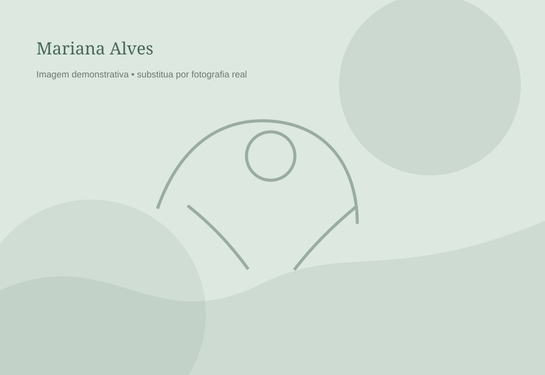
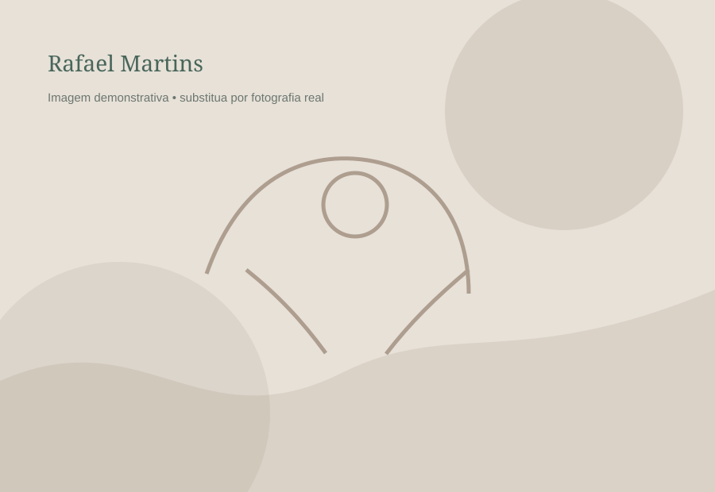
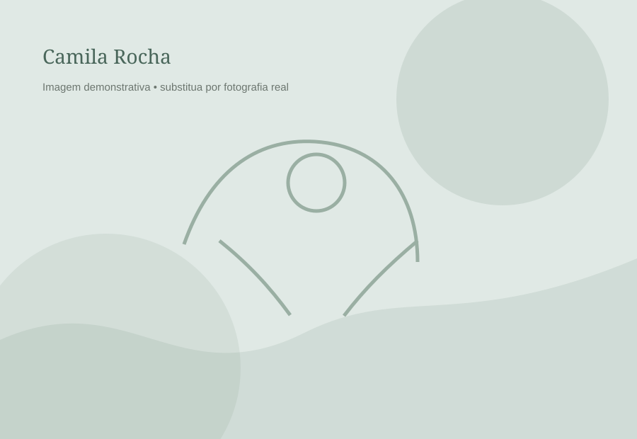
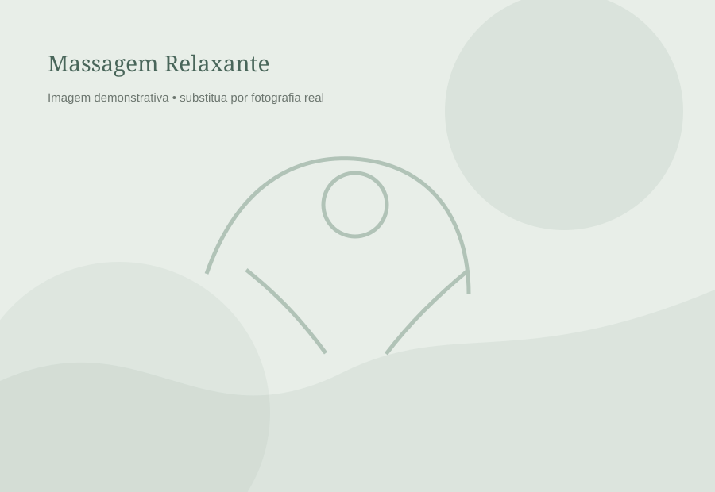
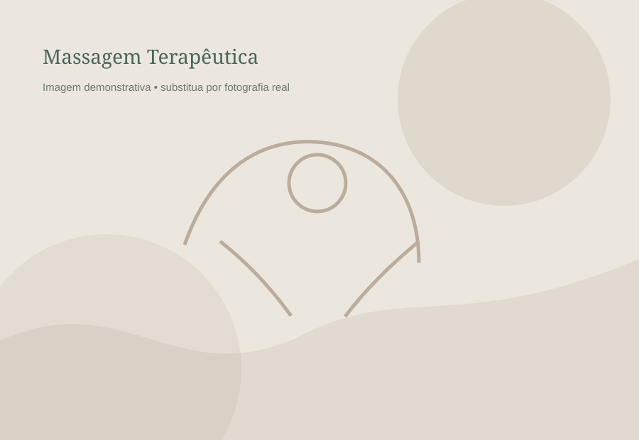
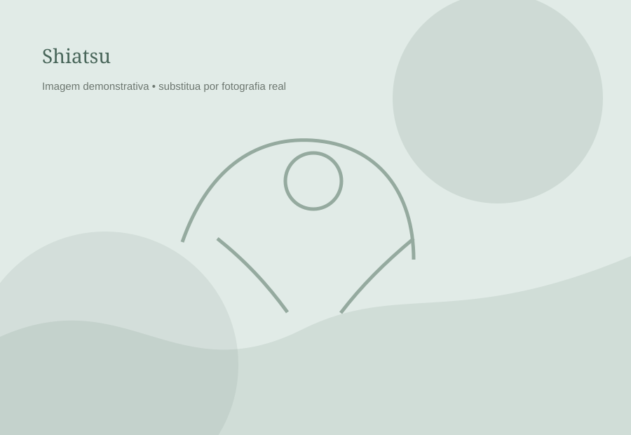
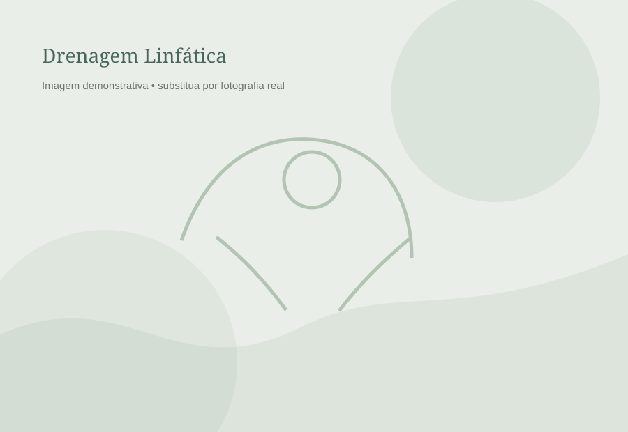
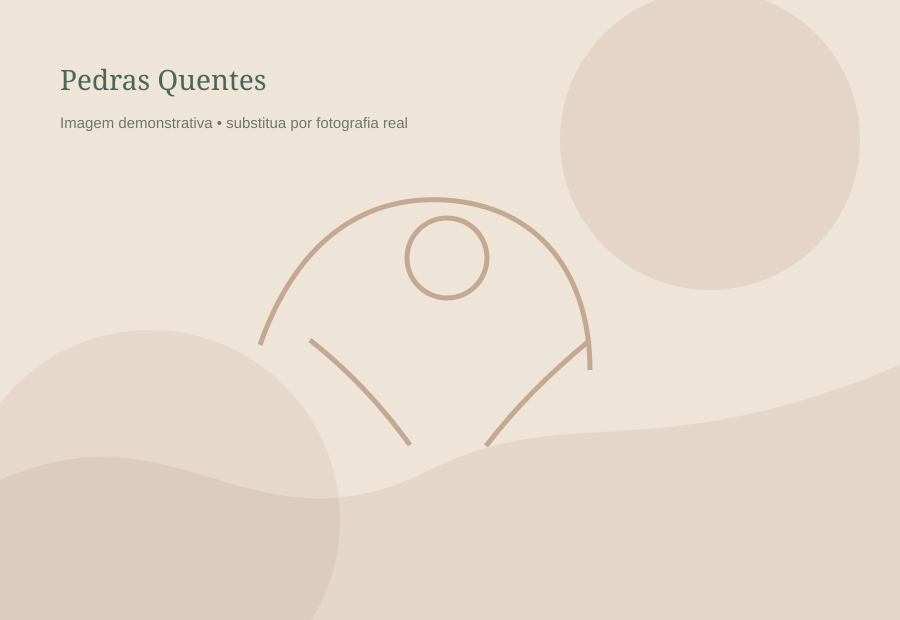
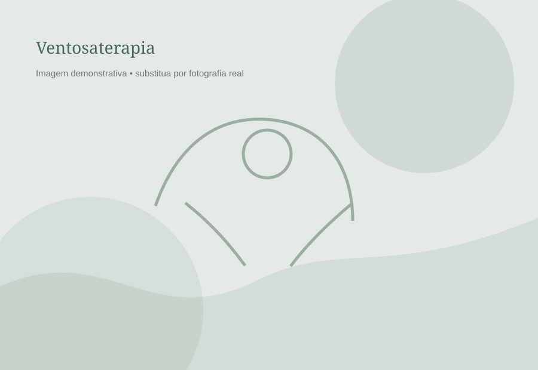

Cuidado • Equilíbrio • Bem-estar
Turma 68
Turma 68
MASSOTERAPIA SENAC MS.
A Turma 68 de massoterapia formada pelo Senac, em 2026, combinam técnica e dedicação para proporcionar experiências únicas às pessoas promovendo saúde e qualidade de vida.
✓ Atendimento personalizado
✓ Ambiente acolhedor
✓ Profissionais especializados


+200atendimentos realizados
Sobre a turma 68
Bem-estar pensado para você.
A MASSODIN nasceu para transformar o cuidado em uma experiência real de presença, acolhimento e equilíbrio.
Unimos diferentes técnicas de massoterapia a um atendimento individualizado, respeitando as necessidades e o momento de cada pessoa.
+10profissionais
10técnicas
100%cuidado
Nossa equipe
Conheça nossos massoterapeutas
Profissionais preparados para oferecer uma experiência acolhedora e personalizada.


Técnicas
Encontre o cuidado que combina com você.
Cada técnica possui objetivos e características diferentes. Conheça algumas das nossas opções.

Massagem Relaxante
Toques suaves e ritmados para promover relaxamento e bem-estar.

Massagem Terapêutica
Foco em áreas de tensão e desconforto muscular.

Shiatsu
Pressões específicas que ajudam a reduzir tensões e promover equilíbrio.

Drenagem Linfática
Manobras delicadas com foco no sistema linfático e sensação de leveza.

Pedras Quentes
Calor e massagem combinados para uma experiência profundamente relaxante.

Ventosaterapia
Técnica complementar utilizada para trabalhar tensões e promover relaxamento.
Seu momento de cuidado
Desacelere. Seu corpo agradece.
Fale com nossa equipe e encontre o atendimento ideal para você.